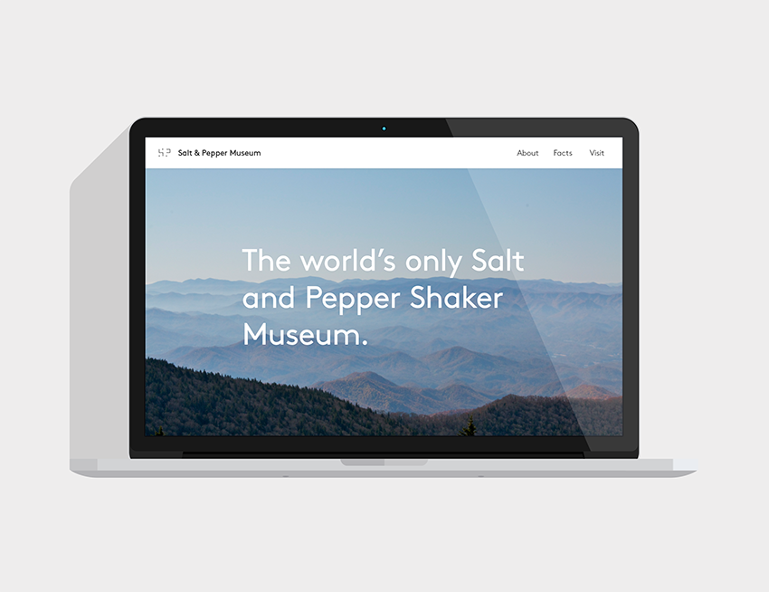
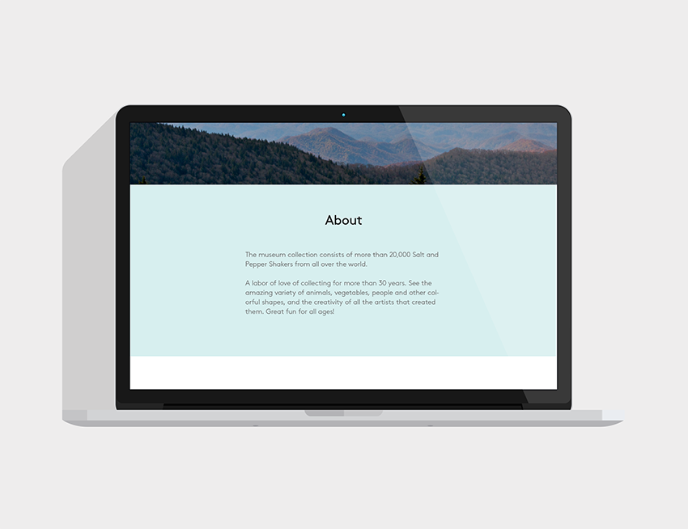
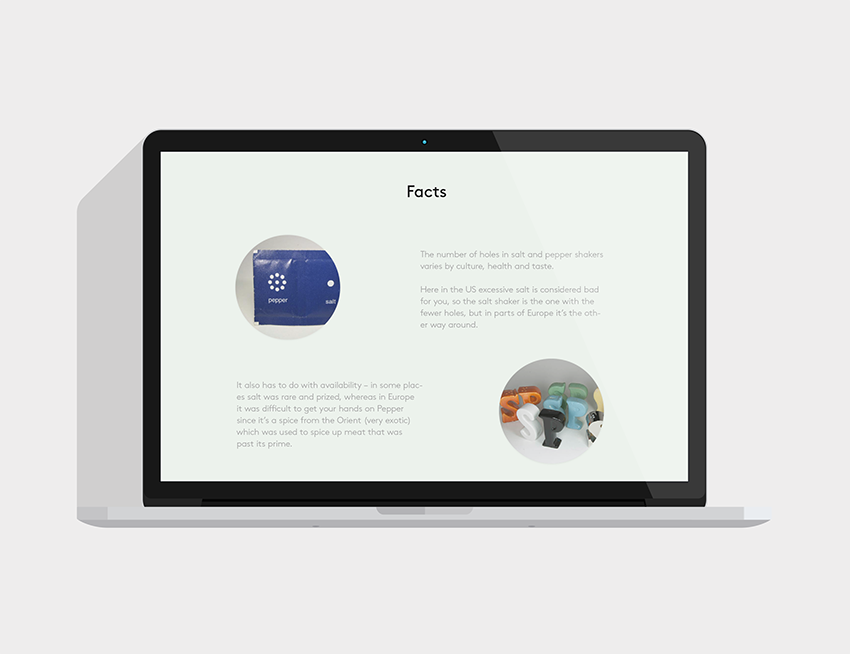
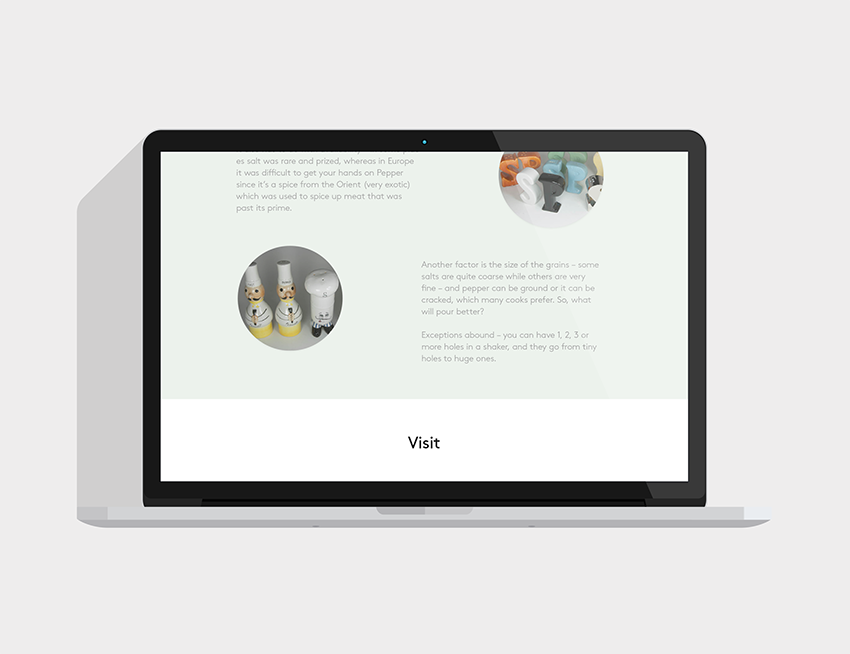
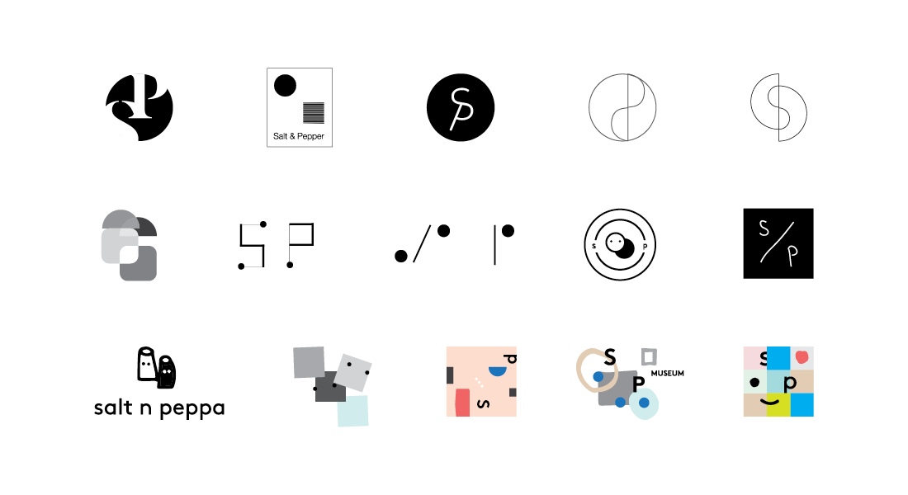

I designed an informative landing page that introduces the museum as a gateway to the neighboring Great Smoky Mountains and draws attention to the collection's core values. The subtle use of circular and rectangular elements alludes to the logo form.





I researched the museum ethos, specific topics about salt and pepper, and the eccentric shakers on display. I conceptualized ideas about contrast, pairing, overlap, dependency, and play. Below are a sample of my initial sketches. 